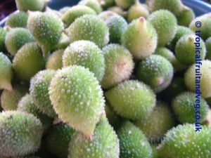

बिल्कुल हद हो गई जी। किकोड़ा की सब्जी और अस्सी रुपये किलो!! आश्चर्य ही हो गया । कल बाजार सब्जी लेने गये और कुछ ठेलों पर बड़े करीने से सजाये एकदम हरे हरे किकोड़े दिख गये। बरसों बाद दिखे सो बड़े उत्साह से जाकर भाव पूछा .. जवाब मिला साठ रुपये किलो।
बच्चों का पता नहीं क्यों पर वे वैसे भी आधी हरी सब्जियों से नाक- भौं सिकोड़ते हैं, वे तो खाने से रहे, सो हमने ढ़ाई सौ ग्राम मांगे तो ठेले वाले का कहना था, मैने किलो का भाव बताया है, पाव लेने हों तो पूरे बीस लगेंगे!!
हमारा तो मूड खराब हो गया, सब्जी वाले से बहस करने की इच्छा थी परन्तु श्रीमती जी ने हाथ खींच लिया। मोंडा मार्केट में जाने के बाद दूसरी सब्जियां खरीदी गई पर हमारा मन तो उन्हीं किकोड़ों में अटका रहा । एकाद और जनों के पास दिखा फटाफट एक से (पाव का) भाव पता किया। भाव तो पचास ही था पर ना जाने क्यों उसने सामने से ही दस रुपये कह दिया हमने फटाफट उसके हाथ में दस रुपये थमा दिये।
आज सुबह बरसों बाद सब्जी भी खाई, और गांव को, खेतों को और बचपन को भी याद कर लिया। अरे ये वे किकोड़े हैं जो खेतों की बाड़ पर और इधर उधर यों ही उग आते हैं, इन्हें कोई भी तोड़ कर नहीं ले जाता क्यों कि हरेक के घर, खेत या बाड़े में मिल/उग जाते हैं। इन्हें तिनकों से जोड़ कर और ताजा लाल मिर्च की एक कतरन को बीच में जोड़कर हम तोता और ना जाने कौन कौन से जानवर बनाया करते थे। आज हंसी आती है कि उसे (तोते को) खड़े रखने के लिये हम प्रकृति से भी छेड़छाड़ कर लिया करते थे। वो कैसे? वो ऐसे कि हम एक पक्षी के चार पाँव लगाया करते थे, अलबत्त ति 

इस सब्जी का जिक्र पढ़ कर आपका भी मन हुआ होगा कि आखिर यह सब्जी है कैसी जिसके लिये एकाद महीने बाद एक पोस्ट ठेलने का मन बन गया। तो आपको सब्जी का फोटो बताने के लिये गूगल पर बहुत खोज की।
कई नामों से सर्च किया। करेले को bitter gourd कहते हैं सो इसकी बिरादरी से मिलते शब्दों को खोजा तो भी नहीं मिला। अचानक याद आया कि इन्हें गुजराती में कंटोळा (કંટોળા-Kantola) भी तो कहते है। अरे ये क्या! Kantola नाम खोजते ही तुरंत इसके फोटो मिल गये। लीजिये आपके लिये भी प्रस्तुत हैं कंटॊले का फोटो… आपकी भाषा में इन्हें क्या- क्या कहते हैं ये भी बताईये।
अब आपके मन में कंटोले की सब्जी खाने की इच्छा हुई होगी तो यह लीजिये इसकी सब्जी बनाने की रेसेपी-
कटोले की सब्जी
…..हां अगर भिण्डी फ्राई की तरह किकोड़े फ्राई बनायें जाये तो भी यह बहुत अच्छे लगते हैं।
फोटो इस जाल स्थल से लिया है, अगर किसी को आपत्ति हो तो बतायें, हटा दिया जायेगा।